비서-1급 (2016-11-20 기출문제)
1과목: 비서실무
1. 다음 중 전문비서의 관리역할로서 잘못 설명된 것은?
- 커뮤니케이션 관리자 - 메시지에 담겨 있는 의미를 파악하여 전하는 전략적 의사소통에 기여하는 자
- 재고관리자 - 단순한 물품 주문만 하는 것이 아니라 재고수준 관리, 비용절감 효과를 측정함으로써 구매에 관한 의사결정에 참여하는 자
- 정책관리자 - 조직의 정책과 절차 등을 유지하고 갱신하고 보완하는 자. 편람을 정비하고 종업원들을 위해 정책이나 절차 등을 설명하기도 함
- 위기관리자 - 상사가 부재중일 때 상사를 대신하여 긴급사태를 지휘하는 자
(정답률: 58%)

2. 다음 중 비서의 자기개발 및 경력계획에 대한 설명으로 적절하지 않은 것은?
- 비서는 새로운 정보기기를 잘 사용할 수 있도록 계속해서 배워야 하며, 데이터의 습득, 해석, 평가, 파일의 조작, 관리 등과 관련된 업무 능력도 지속적으로 높여나감으로써 자기개발을 할 수 있다.
- 비서는 커뮤니케이션 능력을 향상시키기 위해서 경청과 표현능력 뿐 아니라 인간관계 능력, 프레젠테이션 능력, 문제해결 능력, 논리력 등도 개발해야 한다.
- 비서는 본인이 속한 분야의 전문용어를 제대로 구사하고, 의전에 맞추어 편지문과 연설문 등을 작성하며, 비서실에서 다루는 모든 문서를 문법적 오류 없이 수정할 수 있어야 하며, 난해한 문서를 이해하기 쉽게 수정할 수 있는 언어 능력을 개발해야 한다.
- 회계능력을 보유한다는 것은 한 단계 높은 수준의 비서로 자리매김하는 계기가 될 수 있으나, 전산을 활용한 회계 시스템의 활용과 ERP, PI시스템에 대한 부분은 전문가의 영역이므로 비서고유의 업무 위주로 자기개발 및 경력계획을 하도록 한다.
(정답률: 75%)
3. 김 비서는 주말에 일간지에 대표 이사의 행동을 비난하는 기사를 발견하였다. 이에 대해 김 비서가 취할 수 있는 가장 적절한 태도는?
- 일간지 편집국장에게 이메일을 보내 사태 수습을 먼저 한다.
- 주말이라도 상사에게 바로 보고 드리고 지시에 따라 행동한다.
- 일간지 담당기자에게 연락하여 일단은 글을 먼저 삭제하도록 요청한다.
- 홍보팀 담당자에게 이 사실을 알리고 선 조치를 취한 후 상사에게 경과보고를 한다.
(정답률: 60%)
4. 다음은 비서와 고객의 전화통화 내용이다. 전화응대의 내용을 읽고 가장 적절한 응대방법을 제시한 것은?
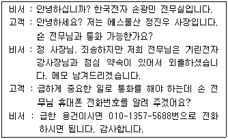
- 손 전무님이 외출했다고만 말하고, 누구와 점심 약속이 있는지 말할 필요가 없다.
- 상사의 휴대폰 번호는 어떠한 상황이라도 알려주지 말아야한다.
- 에스물산 정 사장님이 상사보다 높은 직위에 있는 분이므로 상사의 전화번호를 알려드린 것은 이 상황에서 적절하였다.
- 정 사장님의 용건을 먼저 확인해서 판단한 후 손전무님께 전달해 드린다고 해야 했다.
(정답률: 52%)
5. 한 비서가 김 사장의 출장일정을 보좌하기 위한 업무로 가장 적절한 것은?
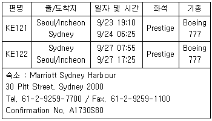
- 9월 23일 오전에 회사에 출근하신 후 출국하실 예정이어서, 오전에 US 달러로 환전하여 준비해드렸다.
- 시드니의 호텔은 4박 일정으로 예약하였다.
- 김홍철 사장의 항공편은 국적기 1등석 좌석 등급으로 좌석은 사전에 미리 예약하였다.
- 9월 21일경에 호텔예약 확인증을 보내달라고 Marriott 호텔에 팩스 요청을 하였다.
(정답률: 51%)
6. 한영희 비서는 작성한 회의록을 정리하여 상사에게 승인을 받고자 한다. 다음의 회의록 내용 중 회의용어 내용이 올바르게 표현되지 않은 것은?
- 定足數가 출석인원 과반수이상이 되어 成員이 되었음을 알리다.
- 김영희 재무팀장이 1안에 대해 動議하고 재청하여 1안이 採決되다.
- 손지영 부장이 議案에 대한 表決방식을 거수로 하자고 제안하다.
- 動議된 議案에 대해 김영희 팀장이 改議하다.
(정답률: 30%)
7. 사장님의 아버지인 회사 설립주 김영철 명예회장의 호는 풍운이다. 다음 중 회사장으로 치러지는 김영철 명예회장의 장례 절차를 준비하는 비서의 업무 수행 중 적절하지 않은 것으로만 묶여진 것은?
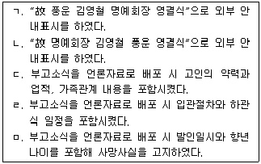
- ㄱ, ㄷ
- ㄱ, ㄹ
- ㄴ, ㄹ
- ㄴ, ㅁ
(정답률: 60%)
8. 미국지사의 팀장인 Greg Crawford는 한국에 업무상 10월 30일 입국 예정이며 상사는 그 즈음에 출장으로 부재중이어서 김 비서에게 대리 접견을 요청하였다. Greg씨를 맞이하는 비서의 태도로 부적절한 것을 고른 것은?
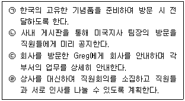
- ㉠, ㉡
- ㉡, ㉢
- ㉢, ㉣
- ㉠, ㉣
(정답률: 66%)
9. 최 비서는 행사 기간이 끝난 후 각 지사장들의 1일 관광 일정을 계획하고 있다. 최 비서가 유의해야 할 점으로 가장 거리가 먼 것은?(9번 공통지문 문제)
- 관광 일정은 호텔 또는 관광회사와 협의하여 마련하도록 한다.
- 일정 중 식사 메뉴는 지사장들의 기호를 미리 파악하여 세심하게 준비하도록 한다.
- 기념품 및 선물 등을 구입할 수 있도록 단체 일정에 쇼핑 일정도 포함시킨다.
- 한국의 문화유산을 알릴 수 있는 유적지와 유명 관광지를 방문한다.
(정답률: 59%)
10. 강비서는 상사가 골프를 취미와 업무상으로 빈번하게 치시기 때문에 골프 예약업무를 자주하게 된다. 다음 중 골프 예약 시 필요 정보와 예약 시 고려 사항에 대한 설명으로 옳지 않은 것은?
- 골프장은 시간단위로 티오프(tee-off) 시각을 정하는 경우가 많으니 예약 시 시각을 혼동하는 일이 없도록 한다.
- 그린피와 캐디피·카트피로 나누어지며, 캐디피와 카트피는 법인 카드 사용이 안 되는 곳이 대부분이므로 현금을 준비하도록 해야 하고, 회원 그리고 주말이나 주중에 따라서 가격이 달라지므로 해당 골프장 홈페이지를 참조해서 가격 정보를 확인한다.
- 회원권 소지자만 예약이 가능한 회원제 골프장과 일반인도 예약 가능한 퍼블릭 골프장이 있으며, 골프 예약은 주로 회사나 상사 개인이 회원권을 소유한 골프장을 이용하는 경우가 대부분이나 예약 대행사들을 통해서 예약을 진행하기도 한다.
- 골프장마다 자체적으로 정한 위약 규정이 홈페이지에 안내되어 있고, 규정을 어기면 벌점을 받게 되는데 일정 점수 이상이 되면 골프 예약이 불가하므로 규정을 잘 준수해야한다.
(정답률: 48%)
11. 외부강사를 초청하는 회의에서 비서가 준비해야 할 것으로 다음 중 가장 적절한 것은?
- 강사에게 강의 요청서를 미리 보낸 후 확답을 받으면 일시, 장소, 목적 등 정보를 구두로 알려준다.
- 회의에 참석할 대상자의 정보를 강사에게 미리 전달하고 강사에게 이력서나 약력을 보내달라고 요청한다.
- 강의 요청서 공문을 보낼 때 참석여부에 대한 항목을 넣어 회신하도록 한다.
- 강사료는 현금과 계좌 입금 중 강사가 원하는 것으로 준비해 둔다.
(정답률: 48%)
12. 최고경영자의 이미지 제고와 홍보 관리자로서의 비서의 업무 수행 내용으로 가장 적절하지 않은 것은?
- 최고경영자의 대외 스피치 자료와 기고문 등을 저장, 관리하여 사내외 온라인 게시판에 업로드 한다.
- 최고경영자의 사회 참여활동과 봉사활동 등을 보좌하고 관련 정보를 수집하여, 사내 홍보담당자와 공유한다.
- 최고경영자와 관련된 보도 자료에 세심한 관리뿐 아니라, 업무상 관련 기자들의 정보를 리스트업 하고 수시로 업데이트 한다.
- 최고경영자의 이미지가 중요하므로 회사를 홍보하는 팜플렛 등은 접견실에 두지 않고 상사 관련 보도 자료를 비치하여 손님응대에 활용한다.
(정답률: 70%)
13. 김 비서는 아침 8시에 출근해 오늘 해야 할 일의 목록을 적었다. 업무의 우선순위를 순서대로 나열한 것 중 가장 옳은 것은?
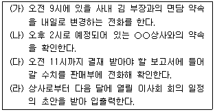
- (가) - (나) - (다) - (라)
- (가) - (다) - (나) - (라)
- (나) - (다) - (라) - (가)
- (다) - (가) - (라) - (나)
(정답률: 76%)
14. 출장 관련 항공 예약 시 알고 있어야 할 항공 용어 설명으로 옳지 않은 것은?
- Stopover : 여정 상 두 지점 사이에 잠시 체류하는 것으로 24시간 이상 체류 시에는 해당 국가 입국 심사를 마치고 위탁 수하물을 수령하여 세관검사까지 마쳐야 한다.
- Transit : 비행기가 출발지에서 출발 후 목적지가 아닌 중간 기착지에 내려서 기내식 준비, 청소, 연료 보급, 승객 추가 탑승 등의 이유로 1~2시간 정도 대기 후 다른 비행기에 다시 탑승하는 경우이다.
- Open Ticket : 일정이 확정되지 않아 돌아오는 날짜를 정확히 지정하기 어려운 경우 돌아오는 날짜를 임의로 정하여 예약하고 항공권의 유효 기간 내에서 일정 변경이 가능한 항공권이다.
- Overbooking : 판매하지 못한 항공권은 시간적으로 재판매가 불가능하므로 예약이 취소되는 경우와 예약 손님이 공항에 나타나지 않는 경우를 대비하여 실제 판매 가능 좌석수보다 예약을 초과해서 접수하는 것을 말한다.
(정답률: 52%)
15. 아래는 Mr. R. Greg 회장의 방한 일정표이다. 한국 방문이 처음인 본사 회장 Mr. R. Greg의 방문 일정이 원활히 진행되기 위한 김 비서의 업무수행 중 가장 옳은 것끼리 짝지은 것은?
- ㉠, ㉡
- ㉡, ㉢
- ㉢, ㉣
- ㉠, ㉣
(정답률: 62%)
16. 다음에 제시한 사례에서 김 비서가 저지른 실수가 아닌 것은?
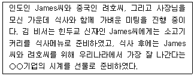
- James를 위한 식사메뉴
- James를 위해 준비한 시계선물
- 려호씨를 위해 준비한 시계선물
- James와 려호씨를 위한 식사메뉴
(정답률: 52%)
17. 김영숙 비서는 영업 상무와 마케팅 부사장을 함께 모시고 있다. 또한 영업부서와 마케팅 부서의 부서장들과도 긴밀하게 업무 협조를 하고 있다. 그러다보니 두 명의 상사로부터 동시에 업무 지시를 받는 경우도 있고 가끔은 상사와 부서장들이 서로 어긋나는 지시를 하는 경우도 있다. 이런 상황에서 김비서의 업무 보고 시 가장 적절한 것은?
- 두 명의 상사로부터 동시에 지시를 받을 때는 업무의 긴급도와 중요도에 따라 업무의 우선순위를 정해야 하므로 각각의 상사에게 업무의 경중을 확인한 후 수행한다.
- 부서장들로부터 지시를 받아 업무를 수행해야 하는 경우 직속 상사에게 보고를 한다.
- 비서는 상사의 지시 내용을 100% 완수해야 하므로 예외적인 상황을 가능한 배제하도록 한다.
- 상사의 지시가 서로 어긋날 경우 우선순위 업무를 판단하여 선(先)수행한 후 보고한다.
(정답률: 29%)
18. 다음 중 비서가 경비 처리하는 방법에 대한 설명으로 가장 적절하지 않은 것은?
- 영수증은 거래의 유효성을 뒷받침하는 증거 서류이므로 훼손되거나 분실하지 않도록 주의한다.
- 회사 내 ERP 회계정보시스템을 이용해서 회계처리를 할 때 비서실과 상사의 거래 자료를 입력하면 자산, 부채, 자본, 수익, 비용의 증감을 가져오게 되므로 거래 자료의 특성에 따라 과목을 설정하여 해당 계정에 입력한다.
- 전산회계 프로그램에는 일반적으로 기업에서 사용하는 공통된 계정 과목이 입력되어 있으므로, 전표 입력 시 계정과목을 새로 등록하거나 수정하여 선택하는 것은 불가능하다.
- 비서실 출장비를 정산할 때 지출 내역 중 숙박비, 식비, 교통비는 여비 교통비로 처리하고, 거래처의 선물비는 접대비로 처리한다.
(정답률: 66%)
19. 아래의 상황을 읽고 상사의 지시에 대응하는 비서의 업무처리 내용 중 우선순위가 가장 낮은 것은?
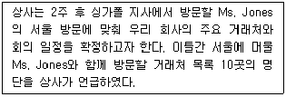
- 10곳 대상기업 중 우선순위 기업이 있는지를 상사에게 질문한다.
- 언제까지 일정을 확인하여 보고해야 하는지를 확인한다.
- 현재 Ms. Jones의 방문일정 관리로 바쁜 상황이므로 동료 비서에게 도움을 청해도 될지를 상사에게 질의해 본다.
- 거래처 방문 시 준비해야 할 자료 및 사항을 바로 확인한다.
(정답률: 29%)
2과목: 경영일반
20. 다른 사람과 비교하여 내가 받는 보상이 노력에 비해 적다고 생각하면 불만이 생기고, 노력을 줄이게 된다는 동기부여 이론은 다음 중 무엇인가?
- XY이론
- ERG이론
- 공정성이론
- 기대이론
(정답률: 59%)
21. 다음 중 국제 라이센싱(licensing)에 대한 설명으로 가장 옳지 않은 것은?
- 현지국의 무역장벽이 높을 경우, 라이센싱이 수출보다 진입 위험이 낮으므로 진입전략으로 라이센싱이 유리하다.
- 해외진출 제품이 서비스인 경우 수출이 어렵고 이전비용이 많이 소요되므로 라이센싱보다 직접투자를 선호하게 된다.
- 라이센싱에 따른 수익이 해외투자에 따른 수익보다 낮지만 정치적으로 불안정한 시장에서 기업의 위험부담이 적다는 장점이 있다.
- 라이센서(공여기업)가 라이센시(수혜기업)의 마케팅 전략이나 생산 공정을 통제하기가 쉽지는 않다.
(정답률: 54%)
22. 다음 중 기업 활동에 직접적으로 영향을 미치는 환경요인에 대한 설명으로 가장 적절한 것은?
- 산업의 경쟁구조를 이해하기 위해 동종산업 내 산업경쟁자 뿐만 아니라 예상진입자나 대체 산업자와의 경쟁관계도 파악해야 한다.
- 정부는 기업 활동에 대한 규제기관이 아니라 지원기관으로서, 기업 활동의 보호, 육성, 연구지원 등을 통해 기업을 돕는다.
- 기업은 공급자의 경쟁력을 낮추기 위한 노력으로 공급사슬관리(SCM)를 활용하지만 이를 통해 안정적 공급처를 확보하기에는 어려움이 있다.
- 시장구조가 구매자시장에서 판매자시장으로 변함에 따라 거래조건이 판매자 중심이 되고 있다.
(정답률: 59%)
23. 다음 중 경영환경에 대한 설명으로 가장 적절하지 않은 것은?
- 기업을 둘러싼 외부환경이 보다 복잡해지고 점점 동태적으로 변해가고 있다.
- 기업의 경영환경은 기업이나 기업의 활동에 영향을 주는 모든 요인을 의미한다.
- 기업 경영활동에 영향을 주는 거시환경에는 국제환경, 경제환경, 사회 문화 환경, 정치 법률적 환경, 기술 환경 등이 있다.
- 기업 경영활동에 영향을 주는 미시환경에는 고객, 경쟁업체, 공급업자, 판매업자, 주주, 정부기관, 노동조합, 인구특성요인 등이 있다.
(정답률: 46%)
24. 다음을 읽고 철수 - 민아 - 영미는 각각 무엇을 말하고 있는 것인지, 가장 적합하게 연결된 것은 무엇인가? (순서대로 철수, 민아, 영미)
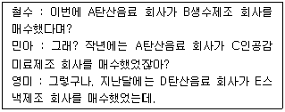
- 수직적 합병 - 수평적 합병 - 혼합 합병
- 수직적 합병 - 수평적 합병 - 매각
- 수평적 합병 - 수직적 합병 - 혼합 합병
- 수평적 합병 - 수직적 합병 - 매각
(정답률: 60%)
25. 다음 중 주식회사에 대한 설명으로 가장 적절한 설명은 무엇인가?
- 주식회사는 여러 투자자들로부터 자본을 모으는데 가장 편리한 기업형태로 자산과 부채가 소유주들로부터 분리된 법인체(legal entity)이다.
- 경영자는 주식의 인수가액을 한도로 출자의무를 부담할 뿐, 회사의 채무에 대해서는 책임을 지지 않는다.
- 주식회사는 민법에 따라 당국의 승인에 의해서만 설립될 수 있다.
- 주식회사의 이익금은 개인소득세로 과세되며, 주주의 배당금에 대해서도 법인세를 내야한다.
(정답률: 55%)
26. 다음 중 기업 형태에 대한 설명으로 가장 적절하지 않은 것은?
- 합명회사는 출자도 경영도 2인 이상이 공동으로 하고 회사 부채에 대해 끝까지 무한책임을 지는 형태이다.
- 합자회사는 유한책임자와 무한책임자가 공동 설립한 회사이며, 무한책임자가 경영을 맡는다.
- 유한회사란 모두가 유한책임사원으로 출자만하고 경영은 제3자가 하되, 지분의 증권화 및 타인에의 양도가 주식회사보다 자유롭다.
- 주식회사는 전문경영자의 도입이 가능하며, 주식의 소유자는 자신이 출자한 지분에 대해서 유한책임을 진다.
(정답률: 54%)
27. 다음 중 기업결합형태에 관련된 설명으로 가장 옳지 않은 것은?
- 트러스트는 기업합병이라고도 하며 둘 이상의 기업이 경제적으로 독립성을 상실하고 새로운 기업으로 통합하는 결합 형태를 말한다.
- 조인트벤처는 둘 이상의 사업자가 공동출자하고 출자액에 비례하는 손익을 분담하는 결합형태를 말한다.
- 카르텔은 시장통제 및 기업안정을 목적으로 상호 관련성이 없는 이종 기업 간에 수직적 협정을 맺는 결합형태를 말한다.
- 콘체른의 결합형태에서는 지배되는 기업이 법률적으로 독립성은 유지되지만 경제적 독립성은 상실하게 된다.
(정답률: 61%)
28. 다음 보기 중 적대적 M&A의 공격기법을 묶은 것으로 가장 옳은 것은?
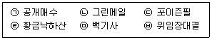
- ㉢, ㉣, ㉤
- ㉢, ㉤, ㉥
- ㉠, ㉢, ㉣
- ㉠, ㉡, ㉥
(정답률: 50%)
29. 다음 중 지식경영에 대한 설명으로 가장 적절하지 않은 것은?
- 지식경영은 미국을 중심으로 문제해결대안으로 등장하였다.
- 지식은 형식지와 암묵지로 구분된다.
- 형식지는 학습과 체험을 통해 습득되지만 드러나지 않는 지식이다.
- 지식경영은 시스템적 관점에서 지식을 축적하고 활용하는 과정이다.
(정답률: 66%)
30. 다음 중 예금은행의 자금조달비용을 반영하여 산출되며 주택담보대출을 받을 때 기준이 되는 금리에 해당되는 것은 무엇인가?
- 양도성예금증서(CD)금리
- 코픽스(cofix)금리
- 콜(call)금리
- 기업어음(CP)금리
(정답률: 34%)
31. 다음의 리더십의 원천인 권력(power)과 관련된 설명 중에서 가장 적절하지 않은 것은?
- 준거적리더십은 리더가 조직으로부터 합법적으로 부여받은 권한에 의해 발생한다.
- 전문적리더십은 리더가 가지고 있는 전문적 지식이나 능력에 의해 발생한다.
- 보상적리더십은 리더가 조직원에게 원하는 보상을 줄 수 있을 때 발생한다.
- 강압적리더십은 리더가 가지고 있는 강압적 권한에 의해 발생한다.
(정답률: 58%)
32. 다음의 설명 중, 괄호에 들어갈 적합한 용어를 순서대로 고른 다면 무엇인가?
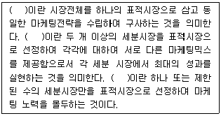
- 비차별적 마케팅전략-차별적 마케팅전략-집중적 마케팅전략
- 비차별적 마케팅전략-차별적 마케팅전략-선택적 마케팅전략
- 차별적 마케팅전략-비차별적 마케팅전략-집중적 마케팅전략
- 차별적 마케팅전략-비차별적 마케팅전략-선택적 마케팅전략
(정답률: 59%)
33. 다음 중 조직구성원을 기업경영에 참여시키는 경영참가제도의 유형과 그 예를 묶은 것으로 가장 적절한 것은?
- 의사결정참가제도 - 락카플랜
- 자본참가제도 - 스캔론플랜
- 이익참가제도 - 노사협의회
- 자본참가제도 - 종업원지주제도
(정답률: 46%)
34. 다음 중 내부모집을 통한 인재채용의 장점으로 가장 적절하지 않은 것은?
- 조직분위기를 쇄신하고 구성원들의 경영의식을 고취할 수 있다.
- 모집에 소요되는 비용이 저렴하고 채용 후 교육훈련 비용을 절감할 수 있다.
- 지원자에 대한 평가의 정확성을 확보할 수 있다.
- 종업원에게 승진기회를 제공하고 사기진작을 하여 낮은 이직률을 가져올 수 있다.
(정답률: 44%)
35. 아래 표를 참고하여 유동비율과 부채비율을 계산한 것으로 가장 옳은 것은?(단위 : 백만원)
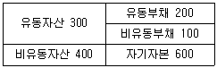
- 유동비율 150%, 부채비율 43%
- 유동비율 67%, 부채비율 50%
- 유동비율 67%, 부채비율 43%
- 유동비율 150%, 부채비율 50%
(정답률: 39%)
36. 다음 중 파생금융상품에 대한 설명으로 가장 적절하지 않은 것은?
- 옵션(option)은 장래 특정일 또는 일정기간 내에 미리 정해진 가격으로 상품이나 유가증권 등의 특정자산을 사거나 팔 수 있는 권리를 현재시점에서 매매하는 거래이다.
- 선물(futures)은 거래소에서 거래되는 장내거래상품으로 표준화된 계약조건으로 매매계약 체결 후, 일정기간이 경과한 뒤에 미리 결정된 가격에 의하여 그 상품의 인도와 결제가 이루어지는 거래를 말한다.
- 스왑은 주택을 담보로 금융기관에서 일정액을 매월 연금으로 받는 상품을 말한다.
- 파생금융상품 종류는 선물, 선도, 옵션, 스왑으로 거래형태에 따라 분류된다.
(정답률: 53%)
37. 아래 보기 내용을 나타내는 용어로 가장 적절한 것은?
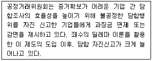
- 타임오프제도
- 리니언시제도
- 백기사
- 연대보증제도
(정답률: 53%)
38. 다음 중 사업부제 조직에 대한 설명으로 가장 적절하지 않은 것은?
- 사업부제 구조는 구별된 사업영역에서 각각이 책임을 지고 있는 상이한 사업부들로 회사가 분화된 구조이다.
- 사업부는 이익 및 책임중심점이 되어 경영성과가 향상된다.
- 사업부 간 연구개발, 회계, 판매, 구매 등의 활동이 조정되어 관리비가 줄어든다.
- 사업부제 조직구조는 제품의 제조와 판매에 대한 전문화와 분업을 촉진한다.
(정답률: 68%)
39. 아래의 내용은 무엇을 설명하는 것인지 가장 적합한 것은?
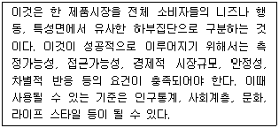
- 마케팅믹스
- 포지셔닝구축
- 시장세분화
- 표적시장
(정답률: 62%)
3과목: 사무영어
40. Choose the one which does not correctly explain the abbreviations.
- CFO : Chief Financial Organization
- DST : Daylight Saving Time
- GNP : Gross National Product
- MOU : Memorandum of Understanding
(정답률: 32%)
41. Which of the following set is the most appropriate for the blank ⓐ and ⓑ?
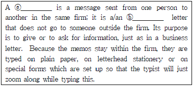
- ⓐ memo - ⓑ internal
- ⓐ manual - ⓑ instructional
- ⓐ business letter - ⓑ outgoing
- ⓐ fax - ⓑ transmitted
(정답률: 43%)
42. Choose the one which has a grammatical error among ⓐ∼ⓓ.
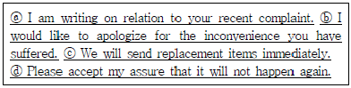
- ⓐ
- ⓑ
- ⓒ
- ⓓ
(정답률: 42%)
43. Read the following message and choose one which is the most appropriate.
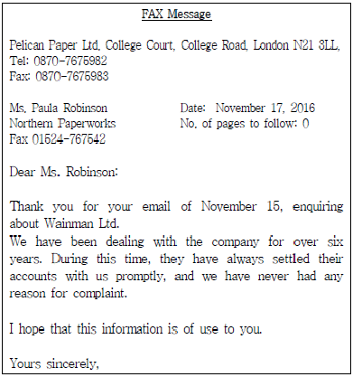
- This message is supposed to be sent by e-mail.
- If there is a problem of transmission, Ms. Robinson may call Pelican Paper Ltd. with the number 0870-7675983.
- The total page of the fax is one.
- The sender works for Northern Paperworks.
(정답률: 53%)
44. Which of the followings is the most appropriate expression for the blanks ⓐ, ⓑ, and ⓒ?(45번 공통지문 문제)
- ⓐ apply to, ⓑ attached, ⓒ requirements
- ⓐ apply for, ⓑ enclosed, ⓒ qualifications
- ⓐ volunteer for, ⓑ enclosure, ⓒ requirements
- ⓐ provide, ⓑ attached, ⓒ qualifications
(정답률: 53%)
45. Which of the following is the most appropriate word for the blank?
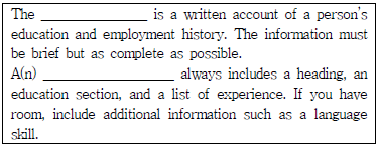
- graduation diploma
- reference letter
- autobiography
- resume
(정답률: 50%)
46. Which of the following is the most appropriate expression for the blank?
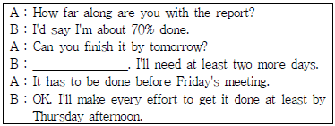
- I don't think so.
- I disagree with what you say.
- I will do that.
- I feel the same way.
(정답률: 58%)
47. According to the following email, which is not true?
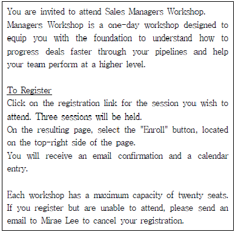
- 각각의 워크샵은 하루 일정으로 진행된다.
- 워크샵 참석 신청은 컴퓨터를 이용해서 신청해야 한다.
- 각각의 워크샵 인원은 이십명이 넘어야 한다.
- 등록은 하였지만 참석하지 못할 경우 취소 이메일을 보내야 한다.
(정답률: 65%)
48. Read the following conversation and choose one which is not true.
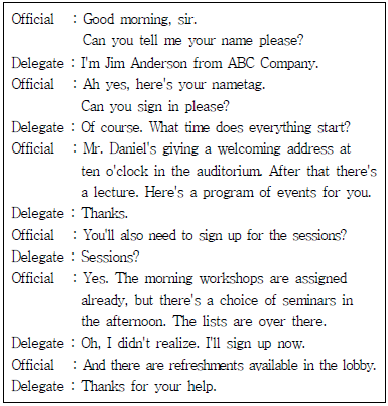
- Mr. Jim Anderson has already preregistered for the event.
- The event will start at 10:00 am.
- Mr. Jim Anderson can choose all seminars regardless of the time.
- Drinks will be served in the lobby.
(정답률: 48%)
49. Read the following itinerary for Mr. Jim Blake and choose one which is not scheduled for him to do in New York.
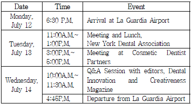
- He is scheduled to participate in meetings.
- He will take a field trip to La Guardia Airport.
- He is supposed to have one interview with editors of magazine.
- He will have lunch with someone from New York Dental Association on Tuesday.
(정답률: 47%)
50. Read the following conversation and choose the most appropriate expression for the blank.
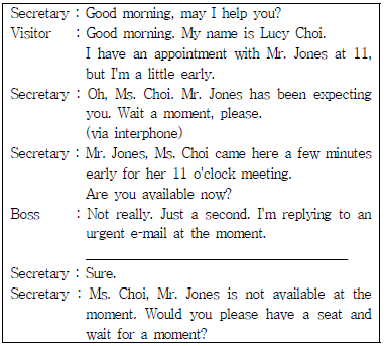
- Please tell her to come another time.
- Would you ask her to wait for a few minutes?
- Would you ask her to cancel an appointment?
- Please give me her new contact number so I can call her now.
(정답률: 64%)
51. Choose one pair of dialogue which does not match each other.
- A : Can you show me the way to the meeting room 702?
B : Take the elevator on your right to the 7th floor. When you take off the elevator, you can see the room on your left side. - A : Can I see Mr. Jung for a few minutes?
B : Let me see if he's available. - A : If there is anything you need, let me know.
B : Thanks a lot. It's very kind of you. - A : Would you mind making copies?
B : Yes, I can manage.
(정답률: 45%)
52. Read the dialogue below and choose one which is not appropriate to replace the underlined.
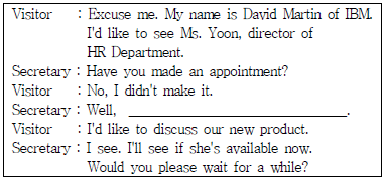
- could you give me the nature of your business?
- could you tell me about your work experience?
- could you tell me what you want to see her about?
- could you tell me the business affairs?
(정답률: 32%)
53. Read the following conversation and choose the most appropriate set for the blank ⓐ and ⓑ.
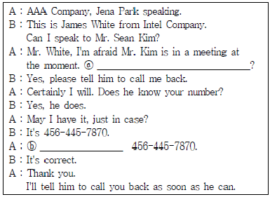
- ⓐ Would you like to take a message?
ⓑ Let me read that back to you. - ⓐ May I put you on hold?
ⓑ Let me repeat it. - ⓐ Would you like to leave a message?
ⓑ I'll read it again. - ⓐ Will you make sure Mr. Brown gets the message?
ⓑ Could you read that back to me?
(정답률: 49%)
54. Choose the expression which is the best for the underlined blanks ⓐ and ⓑ in common.
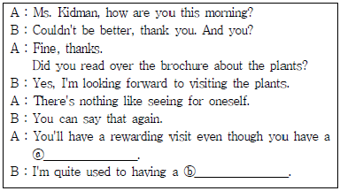
- spare time
- tight schedule
- work hard
- tourist attractions
(정답률: 45%)
55. Choose the most appropriate pair of words for the blank ⓐ and ⓑ.
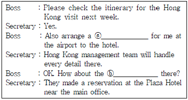
- ⓐ accommodation, ⓑ hotel
- ⓐ ride service, ⓑ entertainment
- ⓐ pick-up service, ⓑ accommodation
- ⓐ airport limousine, ⓑ catering service
(정답률: 58%)
56. Which of the following is the most appropriate expression for the blank ⓐ and ⓑ?
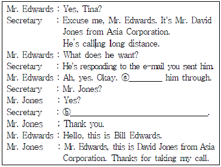
- ⓐ connect, ⓑ Would you like to leave a message?
- ⓐ take, ⓑ I'll connect you to Mr. Edwards.
- ⓐ transfer, ⓑ I'll put you with Mr. Edwards.
- ⓐ put, ⓑ I'll transfer your call to Mr. Edwards.
(정답률: 39%)
57. Belows are sets of Korean sentences translated into English. Choose one which is not correctly translated.
- In the past quarter our domestic sales have increased by 50% while our overseas sales by 19%.
- 지난 분기 우리의 국내 판매는 50% 증가 하였고 반면 해외 판매는 19% 감소하였습니다. - I am wondering if I am able to postpone the meeting scheduled this Friday to next Friday.
- 제가 이번 금요일로 예정된 회의를 다음 주 금요일로 미루는 것이 가능할까요? - If you have any further queries, please do not hesitate to contact me on my direct line.
- 질문이 더 있으시면 주저하지 마시고 제 직통전화로 연락 하십시오. - Manual and service industry workers are often organized in labor unions.
- 육체노동자들과 서비스 산업 종사자들은 종종 노동조합에 가입되어 있다.
(정답률: 49%)
58. Read the following conversation and choose one which is not true?
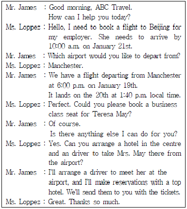
- Ms. Loppez wants to reserve a hotel in the centre for her boss.
- The travel agent will organize a driver for Mrs. May.
- Ms. Loppez works for Mrs. May's office.
- A flight to Beijing will depart from Manchester at 1:40p.m., on January 20.
(정답률: 44%)
4과목: 사무정보관리
59. 상공에너지의 위임전결 규정의 일부가 아래 표와 같다. 아래 표에 의거하여 문서의 결재가 이루어졌다. A문서와 B문서의 안건이 알맞게 짝지어진 것은?
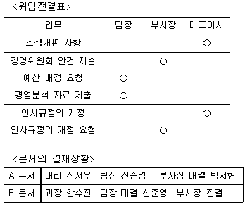
- A : 조직개편 사항, B : 경영위원회 안건 제출
- A : 경영위원회 안건 제출, B : 인사규정의 개정 요청
- A : 인사규정의 개정 요청, B : 경영분석 자료 제출
- A : 인사규정의 개정, B : 예산 배정 요청
(정답률: 40%)
60. 최근에는 문서가 이메일로 수신되는 경우가 빈번하여, 상사의 업무상 이메일을 비서가 열람하고 처리하는 경우가 있다. 이메일 접수에 관련한 비서의 업무가 바람직한 것으로 묶인 것은?
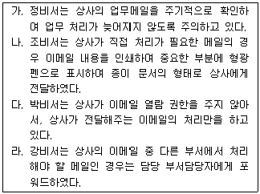
- 가, 나
- 가, 나, 다
- 가, 나, 라
- 가, 나, 다, 라
(정답률: 39%)
61. 다음 중 상사에게 온 우편물에 대한 처리방법으로 적절하게 처리한 것끼리 묶인 것은?
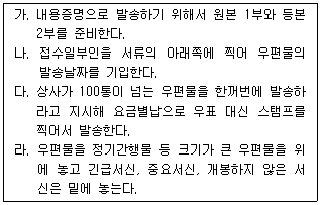
- 가, 나, 다, 라
- 가, 나, 다
- 가, 다, 라
- 가, 다
(정답률: 35%)
62. 다음은 학회 사무국에서 근무하고 있는 최시은 비서가 작성한 안내장이다. 다음 밑줄 친 표현 중 적절하지 못한 것을 모두 고른 것은?
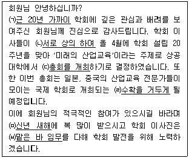
- ㈀, ㈁, ㈂
- ㈀, ㈁, ㈃, ㈄, ㈅
- ㈀, ㈁, ㈂, ㈃, ㈅
- ㈀, ㈁, ㈃, ㈅
(정답률: 52%)
63. 감사장의 작성방법으로 가장 적절하지 않은 것은?
- 출장 중 상대방의 호의에 대한 감사장은 출장지에서 돌아온 후에 즉시 작성한다.
- 행사 참석에 대한 감사장에 행사 중 미진함으로 인해 불편을 준 것에 대해 사과의 말도 함께 적는다.
- 출장 후 감사장은 출장지에서 신세를 많이 진 담당자에게 뿐만 아니라 그 상사에게도 보낸다.
- 감사장 내용을 적을 때는 항목을 분류하여 요점만 간단히 기재하여 한눈에 이해하기 쉽도록 작성한다.
(정답률: 50%)
64. 상공물산 해외사업본부장 비서인 이소진씨는 상사로부터 받은 명함을 나라별로 정리한 후에 회사명으로 정리하려고 한다. 다음 정리 순서가 바르게 된 것은?
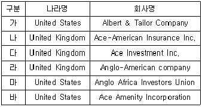
- 바 - 나 - 다 - 가 - 마 - 라
- 나 - 다 - 라 - 바 - 가 - 마
- 바 - 다 - 나 - 가 - 마 - 라
- 다 - 나 - 라 - 바 - 가 - 마
(정답률: 36%)
65. 최비서는 다음 신문기사를 분석해 보고서를 작성하려고 한다. ㉠부분의 자치구별 사망사고 수와 ㉡부분의 연령별 교통사고 사망자 비율을 표현하는데 가장 적합한 그래프 형태를 바르게 연결한 것은?
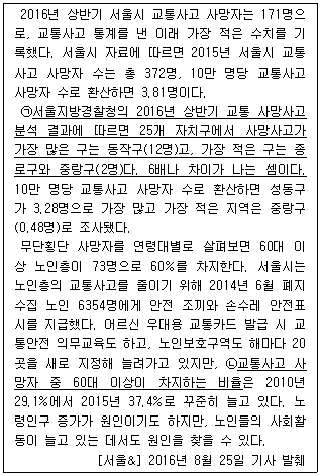
- 꺾은선 그래프 - 막대 그래프
- 혼합 그래프 - 꺾은선 그래프
- 막대 그래프 - 원 그래프
- 분산 그래프 - 꺾은선 그래프
(정답률: 66%)
66. 다음은 문서의 보존연한과 관련된 한국산업의 규정이다. 가장 적절히 문서를 폐기한 비서는 누구인가?
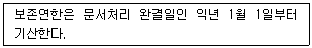
- 최비서는 2015년도 5월에 작성된 문서의 보존연한이 1년 이라 2016년도 6월 초에 폐기했다.
- 김비서는 2012년도 8월에 작성된 문서의 보존연한이 3년 이라 2015년 12월 31일에 폐기했다.
- 안비서는 2013년도 1월에 작성된 문서의 보존연한이 2년 이라 2015년도 2월 초에 폐기했다.
- 정비서는 2012년도 7월에 작성된 문서의 보존연한이 3년 이라 2016년도 1월경에 폐기했다.
(정답률: 52%)
67. 아래 그림에서 사용한 문서 분류방법의 특징으로 가장 적절한 것은?
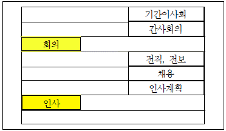
- 간접적인 정리 방법으로 비용이 많이 든다.
- 문서 내용을 언급할 필요가 없어 문서 보안에 용이하다.
- 거래상대방이 있는 자료의 분류에 주로 사용되는 방법이다.
- 같은 주제나 활동에 관련된 문서를 한 곳에 모을 수 있다.
(정답률: 67%)
68. 노트북을 사용하는 최비서가 저장공간 부족 문제 해결을 하기 위해 사용하는 방법으로 적절한 것끼리 묶어진 것을 고르시오.
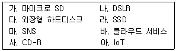
- 다, 라, 마, 사, 아
- 가, 나, 마, 바, 사
- 가, 나, 다, 마, 아
- 가, 다, 라, 바, 사
(정답률: 69%)
69. 최진혜 비서의 회사에서는 전자결재 시스템을 도입하였다. 종이로 결재하던 이전방식과 전자결재 시스템을 비교한 설명으로 가장 적절하지 않은 것은?
- 전자결재 시스템은 결재 상황 조회가 가능해 이전 방식에 비해 신속한 결재가 가능하다.
- 전자결재 시스템을 사용한 후 결재라인에 따라 결재 파일이 자동으로 넘어가 이전에 비해 결재과정의 시간낭비를 줄일 수 있다.
- 결재 문서의 작성부터 문서의 수신과 발신 및 배부가 온라인으로 처리되어 문서관리가 단순화 되었다.
- 문서를 보관할 대용량 데이터베이스 설치 공간이 필요해 사무 공간이 좁아지는 단점이 존재한다.
(정답률: 68%)
70. 다음 중 정보보안 유지와 관련된 행동이 가장 적절한 비서는?
- 최비서는 사무실에서 컴퓨터를 폐기할 때 문서 파일을 모두 삭제해 휴지통으로 이동시킨다.
- 김비서는 퇴근할 때 중요한 서류는 집으로 가져갔다가 출근할 때 다시 가져온다.
- 이비서는 문서뿐 아니라 사용하지 않는 법인카드, 디스켓도 세단기를 이용해 파쇄 한다.
- 유비서는 해킹에 대비해 공인인증서를 컴퓨터 하드 디스크에 저장한다.
(정답률: 61%)
71. 아래 그림은 MS-Access로 작성한 내방객 데이터베이스 테이블의 디자인의 일부이다. 이중 '○'안에 열쇠 표시된 필드의 특징이 아닌 것은?
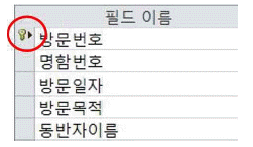
- 유일한 값이어야 한다.
- Null 값이어서는 안 된다.
- 입력된 값을 변경할 수 있다.
- 입력을 생략할 수 없다.
(정답률: 46%)
72. 다음 중 금융감독원의 전자공시 시스템에서 얻을 수 있는 기업 정보가 아닌 것은?
- 회사 재무상태
- 사업자 등록번호
- 사업보고서
- 소액주주명단
(정답률: 62%)
73. 다음 비서의 정보 보안에 관련한 행동 중에서 가장 올바르지 못한 경우는?
- 김비서에게 주어진 모든 업무가 정보 보안과 관련이 되어 있으므로 상사가 선호하는 방식과 회사의 규정을 준수하여 보안업무를 수행하였다.
- 서비서는 상사의 암묵적 동의에 따라서 상사를 대신해서 조직의 중요기밀정보에 접근하여 취급하였다.
- 정비서는 상사의 개인정보를 제 3자에게 제공하는 경우에 상사의 서면 동의를 받아서 제공하고 관리하였다.
- 이비서는 사용하는 업무용 컴퓨터의 중요 문서 보호를 위하여 정기적으로 외장하드에 백업을 받았다.
(정답률: 69%)
74. 다음 중 컴퓨터 범죄에 대한 대응 및 예방을 위한 조치가 가장 적절하지 않은 비서는?
- 황비서는 스미싱 방지를 위하여 PC의 OS 보안패치 업데이트를 수시로 실시한다.
- 강비서는 랜섬웨어를 방지하기 위하여 불확실한 문자메시지의 URL을 클릭하지 않는다.
- 박비서는 악성코드에 감염되는 것을 방지하지 위하여, 인터넷 사이트의 이미지를 다운받아 저장하지 않는다.
- 신비서는 신뢰할만한 백신 1개를 중점적으로 사용하여 악성 코드를 탐지하도록 한다.
(정답률: 24%)
75. 다음 중 같은 종류의 어플리케이션끼리 짝지어지지 않은 것은?
- Google calendar – Outlook – Planner S.
- 카카오톡 – 텔레그램 - Messenger
- Remember – CamCard – BizReader
- Office2 HD – EverNote – Camscanner
(정답률: 52%)
76. 다음은 2016년 9월 28일 발효된 청탁금지법에 관련한 사례를 모아둔 기사 중 일부이다. 기사를 읽고 유추할 수 있는 사항으로 가장 적당하지 않은 내용은?
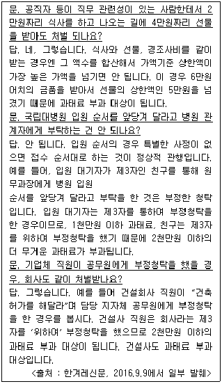
- 기업체 직원이 공무원에게 부정청탁을 할 경우에 직원과 기업체 모두 과태료 부과대상이 될 수 있다.
- 제 3자를 위해서 부정청탁을 해준 경우는, 본인이 제 3자를 통해서 부정청탁하는 것보다 과태료가 낮다.
- 공직자가 직무관련자로부터 2만원짜리 식사를 대접받는 것은 과태료 부과대상이 아니다.
- 식사와 선물, 경조사비를 같이 받을 경우 합산하여 가액기준 상한액이 가장 높은 가액을 초과하면 과태료 대상이다.
(정답률: 62%)
77. 다음 신문기사에 나오는 피해를 막기 위해 만들어진 정보 보안 관련 서비스를 무엇이라 하는가?
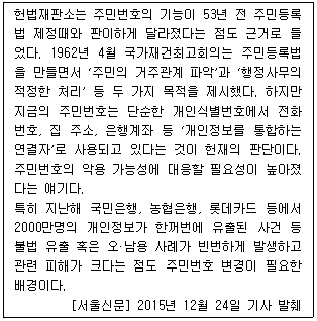
- Active X
- Firewall
- 백신 프로그램
- i-PIN
(정답률: 68%)
78. 다음 (가), (나), (다), (라) 에서 사용하여야 할 사무정보기기가 정확하게 순서대로 기재된 것을 고르시오.
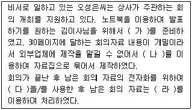
- LCD프로젝터 - 링제본기 - 복사기 - 문서파쇄기
- 슬라이드프로젝터 - 문서재단기 - 스마트마커 - 열제본기
- LCD프로젝터 - 열제본기 - 전자칠판 - 문서코팅기
- 빔 프로젝터 - 와이어제본기 - 스캐너 – 문서파쇄기
(정답률: 60%)
위기관리자는 상사가 부재중일 때 긴급사태를 대처하기 위해 지휘하는 역할을 맡습니다. 이는 조직 내에서 긴급사태가 발생했을 때 신속하고 효과적인 대처를 위해 필요한 역할입니다.